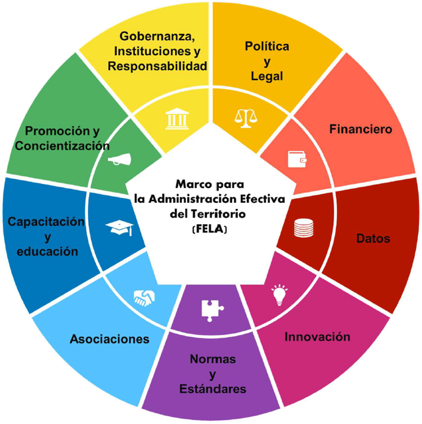
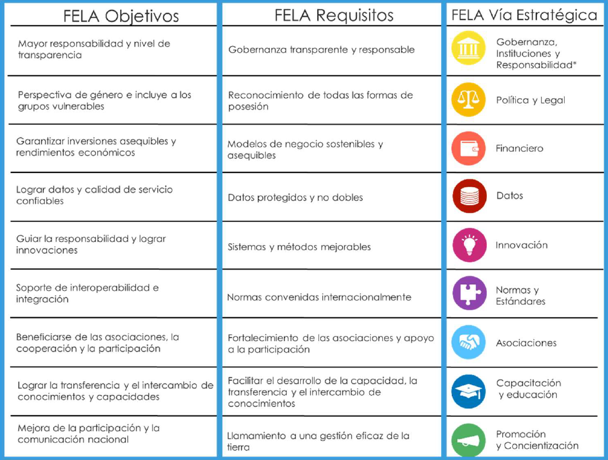

FELA
(Framework for Effective Land Administration)
Marco para la Administración Efectiva del Territorio
La tierra siempre ha sido esencial para la humanidad, no solo como espacio físico para habitar y desarrollarse, sino también como un pilar fundamental de la economía y la estabilidad de los países. En este contexto, los sistemas de administración del territorio constituyen la base para la gestión eficiente de este valioso recurso. Sin embargo, en muchas partes del mundo, estos sistemas aún presentan importantes deficiencias: las relaciones entre las personas y la tierra no están completamente documentadas —como ocurre con catastros incompletos o desactualizados—, existen marcos legales ambiguos, y la coordinación institucional es ineficiente, con datos no estandarizados ni compartidos adecuadamente. Estas limitaciones dificultan una gobernanza territorial eficaz y evidencian la necesidad urgente de adaptar los sistemas existentes a las demandas sociales, económicas y tecnológicas contemporáneas.
En respuesta a estos desafíos, se ha desarrollado el Marco para la Administración Efectiva del Territorio (FELA, por sus siglas en inglés) con miras a contribuir al diseño e implementación de sistemas de administración de tierras modernos, eficientes y adecuados al propósito.
FELA nace del Comité de Expertos de las Naciones Unidas sobre Administración del Territorio, integrado en el grupo de esta organización sobre la gestión de la información geoespacial (UN-GGIM).

Figura 1. Nueve lineamientos del marco para la administración efectiva del territorio

Figura 2. Visión general de los objetivos, requisitos y rutas de FELA
Documentación oficial:
- Versión en español
- Versión en inglés
- Otras versiones: UN-GGIM
Ayuda y Documentación
🌐 ¿Qué es esta plataforma?
Esta aplicación es un visor interactivo de la actividad académica y profesional vinculada al Marco para la Administración Efectiva del Territorio (FELA). Permite consultar, visualizar geográficamente y gestionar eventos, presentaciones y ponentes registrados en todo el mundo.
Cualquier visitante puede explorar el mapa y consultar las estadísticas sin necesidad de crear una cuenta. Los usuarios registrados y aprobados pueden además añadir, editar y eliminar registros.
🗂️ Estructura de la interfaz
La barra superior contiene el menú principal de navegación. Cada sección se activa pulsando su botón:
| Sección | Descripción | Acceso |
|---|---|---|
| 🏠 Inicio | Presentación general del proyecto FELA, sus objetivos y documentación oficial. | Todos |
| 🗺️ Mapa | Mapa interactivo con marcadores, filtros y ventanas emergentes de información. | Todos |
| 📊 Estadísticas | Indicadores clave y gráficos de resumen. Incluye opción de descarga de datos. | Todos |
| ❓ Ayuda | Esta página de documentación y guías de uso. | Todos |
| ℹ️ Acerca de | Información sobre el equipo y las instituciones responsables del proyecto. | Todos |
| 🔑 Administrador | Panel de gestión de usuarios pendientes de aprobación. | Solo superusuarios |
| 👤 Sesión | Botón en el extremo derecho para iniciar o cerrar sesión. | Todos |
🗺️ El Mapa interactivo
Barra de indicadores
En la parte superior del mapa hay una franja oscura con cuatro cifras globales: total de eventos, presentaciones, ponentes y países registrados. Se actualiza automáticamente cada vez que se cargan los datos.
Controles de vista
En la esquina superior derecha del mapa hay cuatro botones que cambian la forma en que se visualizan los datos:
- 🌍 Eventos — Despliega dos opciones:
- Ver por país: agrupa todos los eventos de un mismo país en un único marcador circular con el número total.
- Ver por ciudad: ubica los eventos en la ciudad exacta donde ocurrieron.
- 👥 Autores/Ponentes — Muestra en el mapa los países de origen de todos los ponentes registrados, agrupados por país.
- 🗣️ Idiomas — Despliega la lista de idiomas disponibles. Al seleccionar uno, el mapa muestra cuántas presentaciones en ese idioma existen por país.
- 🏛️ Organismos — Despliega la lista de organismos registrados. Al seleccionar uno, el mapa muestra los países donde ese organismo tiene eventos.
Marcadores numéricos
Cada punto en el mapa es un círculo de color con un número en su interior que indica la cantidad de elementos en esa ubicación. El tamaño del círculo crece logarítmicamente con el número. Al pasar el cursor por encima aparece un tooltip con el nombre del lugar y el recuento exacto.
📚 Guía detallada
Al pulsar sobre cualquier marcador del mapa se abre una ventana emergente con información detallada.
Popups de eventos (vistas Eventos, Idiomas y Organismos):
- Una cabecera azul con el título del evento, año, fecha, tipo y organismos organizadores.
- Un indicador del número de presentaciones que contiene el evento.
- Una tarjeta por cada presentación con su título, ponentes (nombre, país, organismo), idioma y enlace al documento si está disponible.
- Botones de acción en la parte inferior (visibles solo para usuarios con permisos — ver sección de Permisos).
Popups de ponentes (vista Autores/Ponentes):
- Lista de todos los ponentes del país, con sus presentaciones y los eventos a los que pertenecen.
Navegación en el popup: puedes desplazarte (scroll) dentro de la ventana si el contenido es extenso. Para cerrarla pulsa la X en la esquina superior derecha o haz clic fuera de ella.
Los usuarios aprobados ven un panel editor en la parte inferior del mapa. Contiene tres opciones:
📅 Crear Evento Completo
Crea un evento nuevo desde cero con su primera presentación y ponente.
- Escribe el título y selecciona el año.
- Busca el país y la ciudad usando el autocompletado — las coordenadas se asignan automáticamente.
- Opcionalmente añade fecha exacta, tipo de evento y organismos (pulsa Enter para añadir cada uno).
- Completa los datos de la presentación: título, idioma, URL del documento y observaciones.
- Añade el ponente: nombre, país y organismo.
- Pulsa Guardar Evento.
📋 Agregar Presentación a Evento Existente
Añade una presentación nueva a un evento que ya existe en el sistema.
- Busca el evento por nombre usando el campo de búsqueda.
- Completa el título, idioma, URL y observaciones de la nueva presentación.
- Añade el ponente principal.
- Pulsa Guardar Presentación.
👤 Agregar Ponente a Presentación Existente
Vincula un ponente adicional a una presentación que ya existe.
- Busca la presentación por nombre.
- Introduce los datos del nuevo ponente.
- Pulsa Guardar.
El sistema detecta automáticamente si el ponente ya está registrado y lo reutiliza.
La edición y eliminación se realizan directamente desde los popups del mapa. Al abrir el popup de un evento, si tienes permisos verás botones de acción al final de cada evento:
- ➕ Añadir — disponible para cualquier usuario aprobado. Abre el formulario de nueva presentación con el evento preseleccionado.
- ✏️ Editar — disponible solo para el creador del registro o un superusuario. Carga el formulario de edición en el panel inferior.
- 🗑️ Eliminar — disponible solo para el creador del registro o un superusuario. Solicita confirmación antes de borrar.
Editar un evento permite modificar:
- Título, año, fecha, tipo
- País y ciudad (con búsqueda por autocompletado)
- Organismos vinculados
- Lista de presentaciones (editar o eliminar cada una individualmente)
Editar una presentación (desde el formulario de edición del evento) permite modificar:
- Título, idioma, URL del documento, observaciones
- Lista de ponentes: añadir nuevos o eliminar existentes
La sección Estadísticas (accesible desde el menú superior) ofrece un resumen cuantitativo de todos los datos registrados en la plataforma.
Indicadores globales:
- 🌍 Total de eventos registrados
- 📋 Total de presentaciones
- 👥 Total de ponentes/autores únicos
- 🗺️ Total de países con actividad
- 🗣️ Número de idiomas distintos
- 🏛️ Número de organismos distintos
Gráficos disponibles:
- Eventos por año — evolución temporal de la actividad.
- Top países por eventos — los 10 países con más eventos.
- Presentaciones por idioma — distribución de idiomas (gráfico circular).
- Top países por ponentes — los 10 países con más ponentes distintos.
- Top organismos — los 10 organismos con mayor número de eventos.
- Top 10 ponentes — los ponentes con mayor número de presentaciones.
Los gráficos se generan automáticamente con los datos actuales cada vez que se accede a la sección.
En la parte superior de la sección Estadísticas hay un botón ⬇ Descargar GeoJSON que permite exportar todos los datos de la plataforma para uso externo.
¿Qué contiene el archivo?
- Todos los eventos con sus metadatos (título, año, fecha, tipo, país, ciudad, organismos).
- Todas las presentaciones vinculadas (título, idioma, URL, observaciones).
- Todos los ponentes (nombre, país, organismo).
- Datos geográficos de países y ciudades usados en el mapa.
¿Qué no contiene?
- Información sobre quién creó o modificó cada registro.
- Identificadores internos del sistema.
- Fechas de generación u otros metadatos internos.
El archivo se descarga en formato GeoJSON estándar, compatible con QGIS, ArcGIS, Python (GeoPandas), R y otras herramientas de análisis geoespacial. El nombre del archivo incluye la fecha de descarga.
La plataforma tiene tres niveles de acceso:
Visitante (sin cuenta)
- Navegar por todas las secciones informativas.
- Explorar el mapa completo en todas sus vistas y filtros.
- Consultar los popups con información detallada.
- Ver la sección de Estadísticas y descargar los datos.
Usuario aprobado (con cuenta activa)
Todo lo anterior, más:
- Crear nuevos eventos, presentaciones y ponentes.
- Añadir presentaciones a cualquier evento existente.
- Editar y eliminar los registros que creó.
Superusuario (administrador)
Todo lo anterior, más:
- Editar y eliminar cualquier registro, independientemente de quién lo creó.
- Acceder al panel Administrador para aprobar o gestionar cuentas de otros usuarios.
Proceso de registro:
- Pulsa Iniciar sesión en la barra superior.
- En la página de acceso, selecciona Crear cuenta.
- Completa el formulario con tus datos.
- Tu cuenta quedará pendiente de aprobación por un administrador. Una vez aprobada recibirás acceso completo al editor.
- Busca antes de crear. Usa el mapa o el buscador del formulario para verificar que el evento o ponente no existe ya en el sistema y evitar duplicados.
- Usa el autocompletado. Los campos de país, ciudad, ponente y organismo ofrecen sugerencias automáticas. Seleccionar una sugerencia garantiza que los datos quedan correctamente vinculados y geocodificados.
- No olvides el botón ➕ al añadir ponentes. Al editar una presentación debes pulsar ➕ para confirmar cada ponente antes de guardar; de lo contrario el ponente no se vinculará.
- Los cambios no se guardan solos. Toda creación o edición requiere pulsar el botón ➕ o Guardar correspondiente.
- La eliminación es permanente. Eliminar un evento borra también todas sus presentaciones. Confirma siempre antes de proceder.
- El mapa se actualiza automáticamente tras guardar o eliminar un registro, por lo que los cambios se reflejan de inmediato.
- La descarga de datos siempre refleja el estado actual de la plataforma en el momento en que se pulsa el botón.
El presente proyecto surge en colaboración de:
Cátedra de Nova Cartografía
Financiado por Nova Cartografía y la Cátedra homónima adscrita a la ETSIGCT de la UPV.
CCASAT
Coordinación Cartográfica en el Sistema de Administración del Territorio. Sede en la UPV, España.
Elsie-Yadira Fernández-Rea
Estudiante de Master en Ingeniería Geomática y Geoinformación de la UPV.
Carmen Femenia-Ribera
Profesora Titular de Catastro en la UPV desde 1998. Doctora Ingeniera en Geodesia y Cartografía.
Gaspar Mora-Navarro
Profesor de SIG y desarrollo web. Doctor Ingeniero en Geodesia y Cartografía. UPV.